Documentation & Examples
Illustrative Example
Jet Model
The Jet model is a Moore-Greitzer model of a jet engine compressor which has a stabilizing feedback control, operating in the no-stall mode. It describes the shifted mass flow rate through the compressor (x) and the shifted pressure rise (y) across it. The discretized dynamics are given as follows:
$$ x_{k+1} = x_k + \Delta t \left( -y_k - 1.5x_k^2 - 0.5x_k^3 - 0.5 \right) + \epsilon $$
$$ y_{k+1} = y_k + \Delta t \left( 3x_k - y_k \right) + \epsilon $$
where
$x = \mathcal{X} - 1$,
$y = \mathcal{Y} - \mathcal{Y}_{co} - 2$,
Here, $\mathcal{X}$ and $\mathcal{Y}$ are the mass flow and air pressure rise through the compressor, respectively, $\mathcal{Y}_{co}$ is a constant equal to the pressure rise at zero mass flow and $\epsilon$ is the bounded environmental uncertainty on $x$ and $y$ which is sampled uniformly at every time step and models the disturbances that are not captured by the dynamics.
The following diagram shows how Posto works to monitor these dynamical systems.
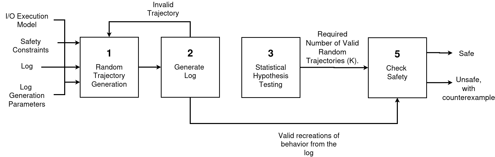
JSON Representation (I/O Execution Model + Safety Constraints)
The Jet model is specified in a JSON file in which the state variables, noise, dynamics, and safety constraints are encoded as follows:
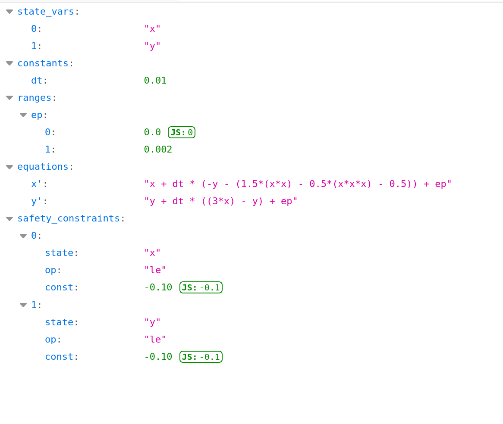
state_vars: the state variables $x$ and $y$.constants: fixed values used in the equations, here the time stepdt($\Delta t = 0.01$).ranges: the noise variableep, which represents the environmental uncertainty $\epsilon$. A random value ofepis drawn uniformly from $[0, 0.002]$.equations: the update rule for each state. The primed name (x',y') denotes the value at the next time step ($x_{k+1}$, $y_{k+1}$).safety_constraints: the list of unsafe conditions, each defined by:state: the monitored state variableop: the comparison operator, one ofge($\geq$),le($\leq$),gt($>$), orlt($<$)const: the threshold
The two entries encode $x \leq -0.10$ and $y \leq -0.10$. A trajectory is unsafe if any entry holds at any time step.
System Behavior
The behavior command samples initial states uniformly from the initial set $x, y \in [0.8, 1.0]$ and simulates each one for the time horizon $T = 2000$ using the dynamics above (Block 1). The trajectories differ because each starts from a different initial state and receives a random noise $\epsilon$ from within the provided ranges.
python posto.py behavior --log=logs --init="[[0.8, 1.0], [0.8, 1.0]]" --timestamp=2000 --mode=equation --model_path=models/Jet.json
Example Results
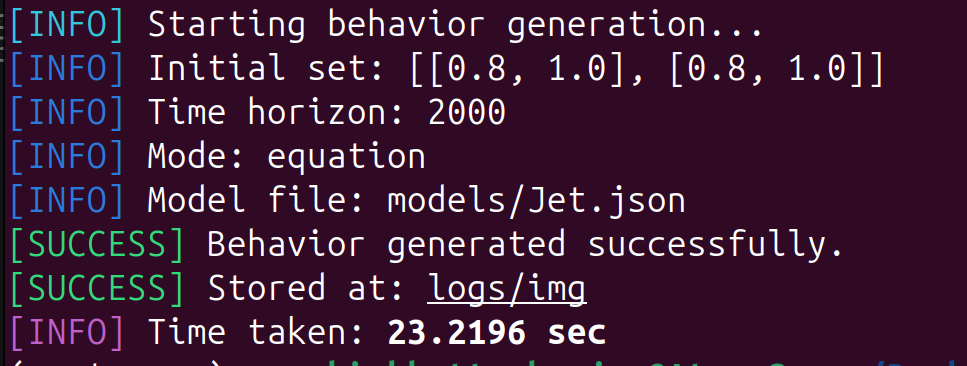
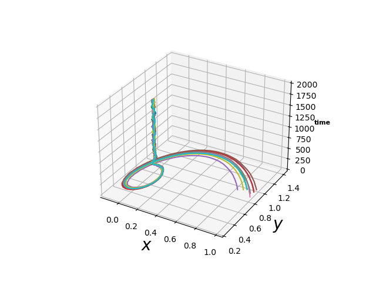
The plot above shows the resulting trajectories, each shown in a different color with $x$ and $y$ on the x- and y-axes and the time step on the z-axis. For models with more than two state variables, one plot is generated for each pair of states, so any pair can be inspected. The plots are saved in logs/img.
Generate Log
checkSafety requires a log of the system as an input. This log can can come from a real system or be generated by Posto with the generateLog command (Block 2 in the diagram above). It simulates one trajectory from a random initial state and records each time step with logging probability prob (in percent). Starting with the initial state, each recorded state $v$ is stored as the interval $[v - \delta_{log}, v + \delta_{log}]$, where $\delta_{log}$ is set by dtlog, giving a sparse and uncertain log similar to one recorded by a noisy sensor.
python posto.py generateLog --log=logs/Jet.lg --init="[[0.8, 1.0], [0.8, 1.0]]" --timestamp=2000 --mode=equation --model_path=models/Jet.json --prob=5 --dtlog=0.04
Example Results
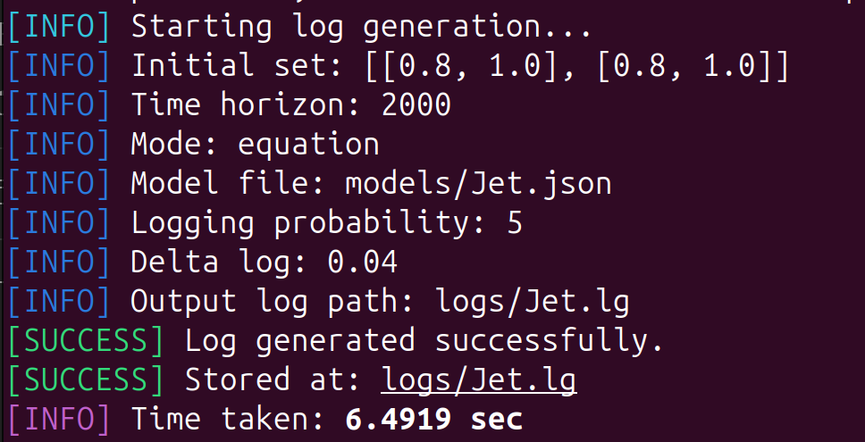
Log File Example
Each line of the log stores a time step followed by one interval per state, in the order of state_vars:
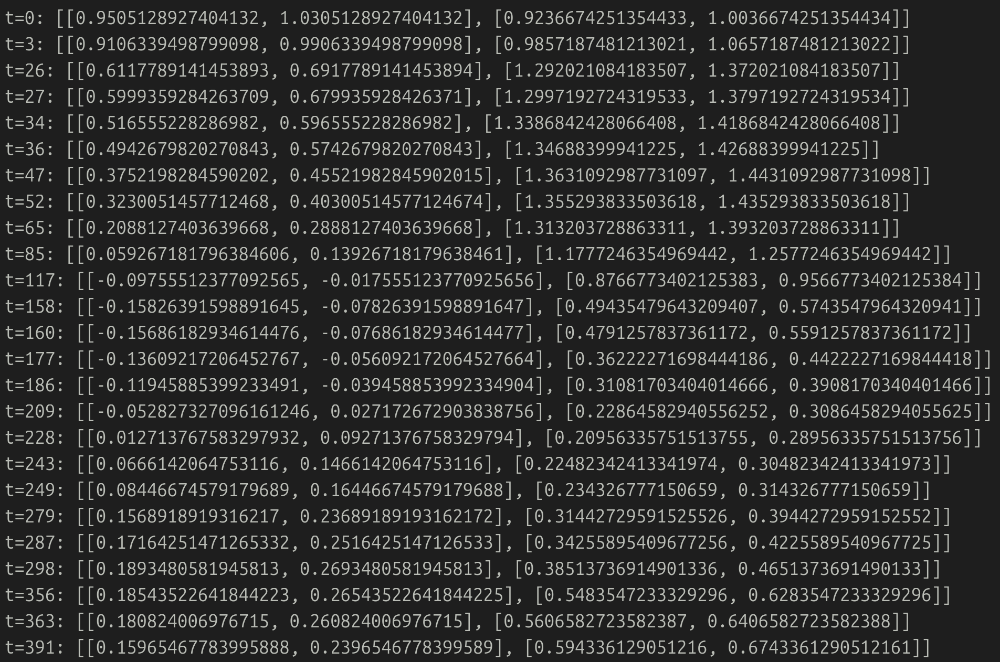
Posto also plots the log in 3D, with $x$ and $y$ on the horizontal axes and the time step on the vertical axis. In these plots, the boxes mark all log records and do not indicate safety
Without Trajectory Visualization
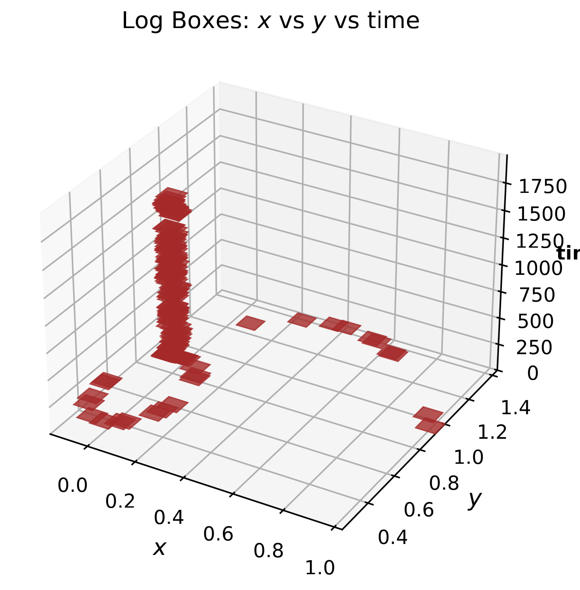
The plot shows the log records as brown boxes.
With Trajectory Visualization
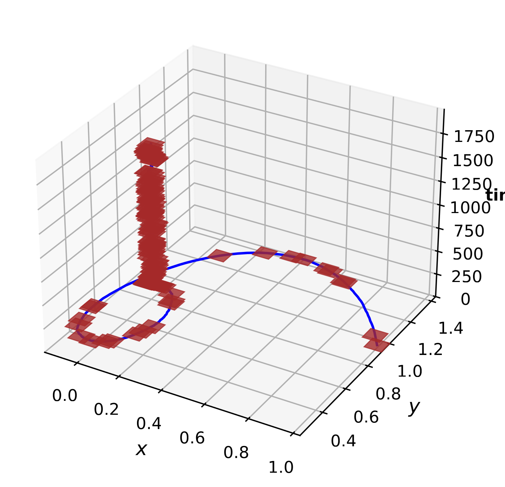
The blue curve in this plot shows the simulated trajectory from which the log has been recorded along with the records denoted with the brown boxes.
Check Safety
The checkSafety command takes the mode, the model and a log as inputs. It first checks every log record against the safety constraints. If the log is determined to be safe, it generates random trajectories (Block 1) keeping only the valid ones that pass through every record in the provided log and checks them against the constraints (Block 5). It stops at the first unsafe valid trajectory or infers the system to be safe once $K$ (obtained from Block 3) valid trajectories are all found safe. During the run, Posto prints the number of generated and valid trajectories every 100 trajectories, followed by the time taken and the verdict.
The --mode argument tells Posto how the system model is provided. Two modes are available:
equation: the model is a.jsonfile like the one used in this example.ann: the model is a trained neural network provided as a.h5file. Since a.h5file does not store state names or safety constraints the following must also be provided:--states: a comma-separated list of state names.--constraints: the safety constraints, given either as an inline list or as a.jsonfile.
For dynamics that require custom Python code, the Development Mode described below can also be used.
python posto.py checkSafety --log=logs/Jet.lg --mode=equation --model_path=models/Jet.json
Posto produces one plot per state variable, with the time step on the horizontal axis and the state value on the vertical axis. Black boxes are log records, and the red dashed horizontal line marks the threshold $-0.10$.
Example Results
SAFE
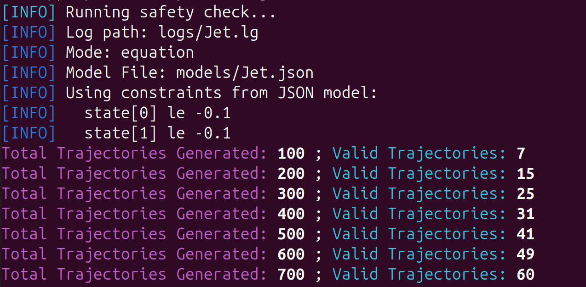
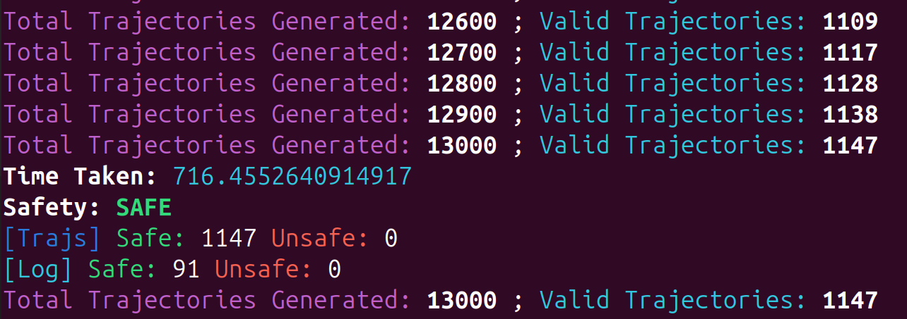
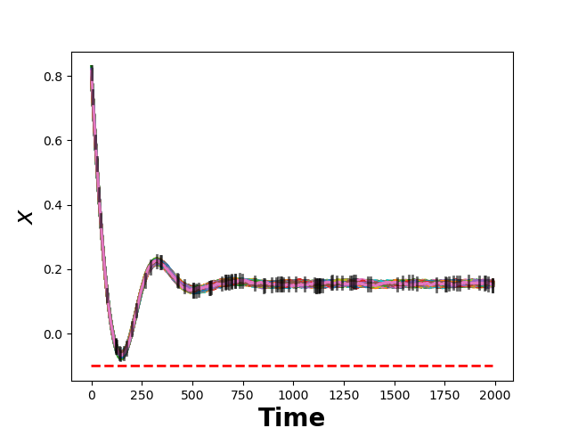
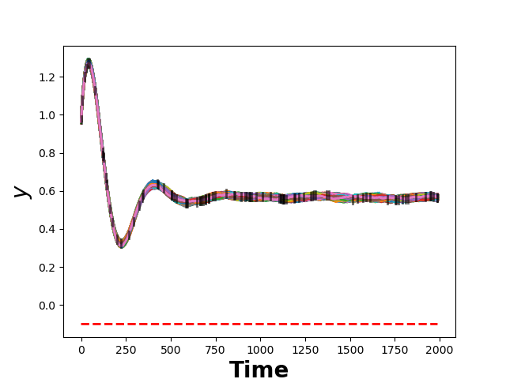
In the above plots, the colored lines are the valid trajectories, each passing through every record on the log and staying above the threshold. All 1,147 valid trajectories (out of 13,000 generated) are safe, so the system is inferred safe with confidence $c$.
UNSAFE LOG
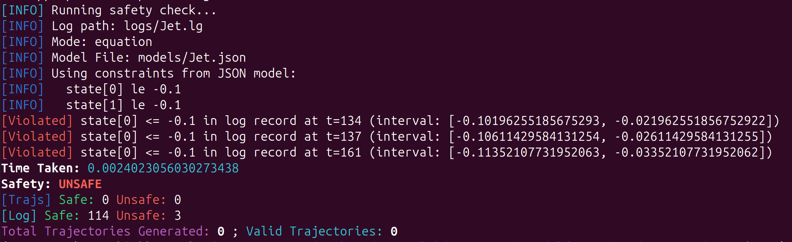
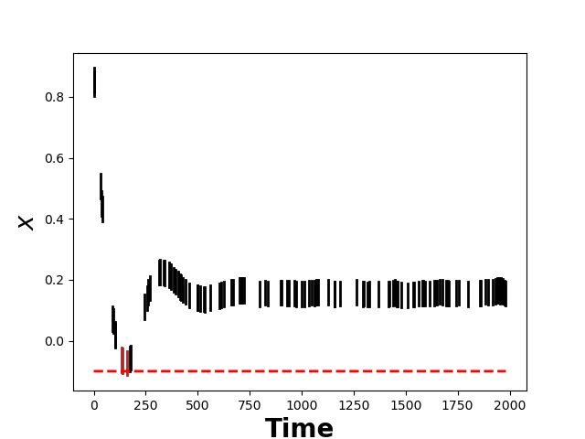
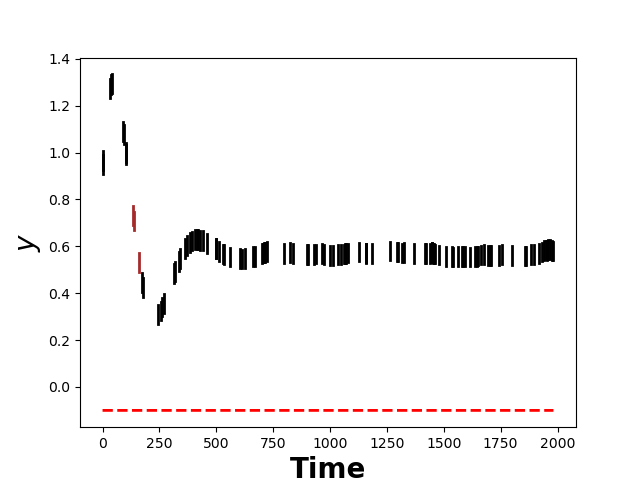
In this example, the system is inferred to be unsafe since $x$ intervals of 3 records in the log itself reach $-0.10$ (t = 134, 137, 161). As a result, no trajectories are generated. Brown boxes in the $x$ and $y$ plots are the unsafe log records while the black boxes are the safe log records.
UNSAFE TRAJECTORY
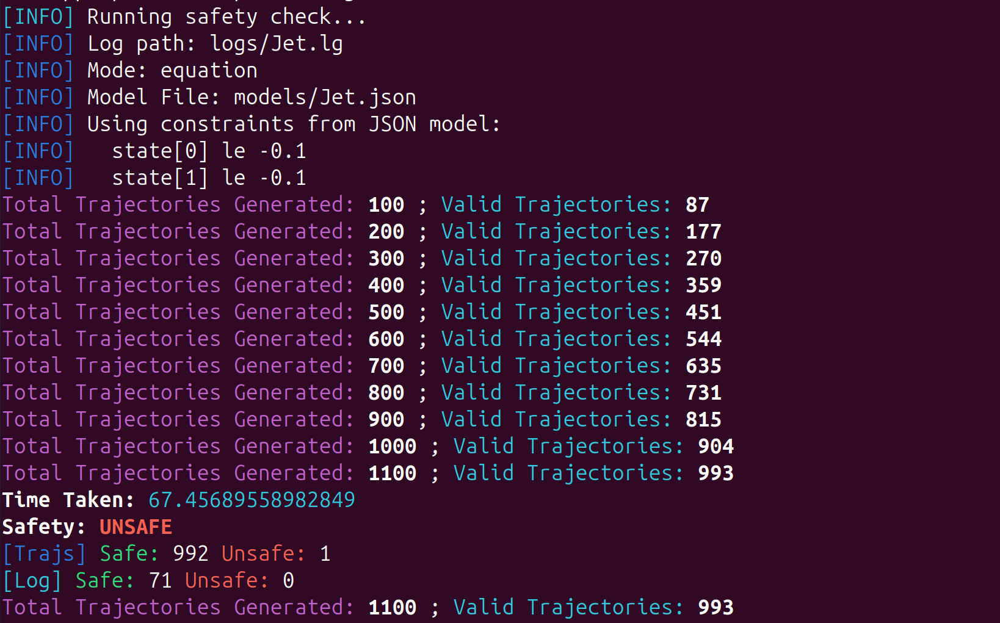
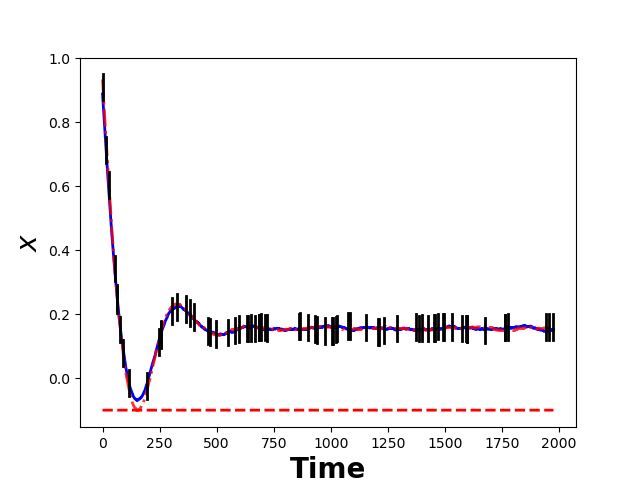
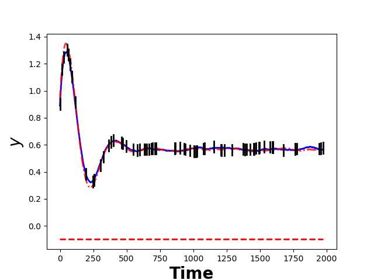
All log records are safe but a valid trajectory shown as the red dashed curve drops below $-0.10$ in $x$ near step 150 and is returned as a counterexample. The blue curve is a safe valid trajectory.
Posto can be used either from the command line or directly from Python. The quick start below uses Python to generate a log for the Jet model and check its safety, with the same settings as the illustrative example that follows:
from System import *
# Example usage: Jet model
s = System("logs/Jet.lg", "equation", "models/Jet.json")
s.generateLog([[0.8, 1.0], [0.8, 1.0]], T=2000, prob=5, dtlog=0.04)
s.checkSafety()
More examples and detailed documentation can be found here.
Recreating Results Once the tool is downloaded and set up, the experimental results can be reproduced using the script provided in our GitHub repository, with detailed usage instructions available here.